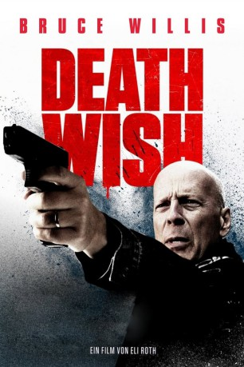
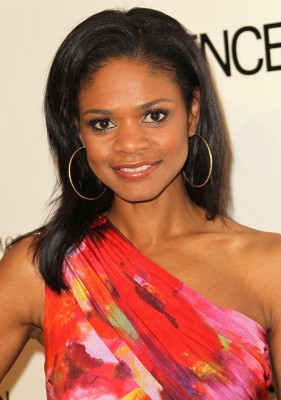
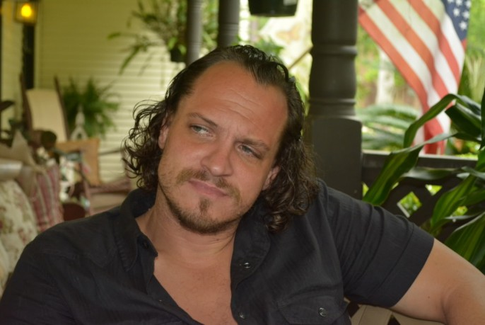
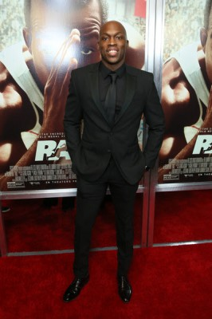
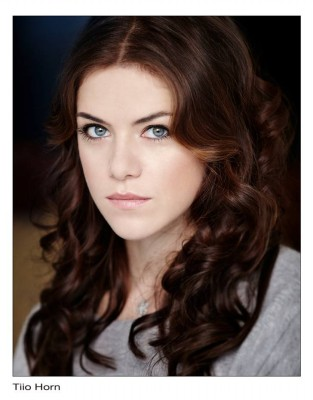
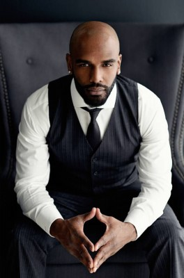

#9438 Death Wish
 gesehen am 06.01.2019
gesehen am 06.01.2019
 
 IMDB-Wertung: 6.4 / 10
IMDB-Wertung: 6.4 / 10  Tomatometer: 18
Tomatometer: 18  Metascore: 31
Metascore: 31 
Dr. Paul Kersey arbeitet als Chirurg in der Notaufnahme eines Krankenhauses in Chicago. Jeden Tag sieht er dort aus nächster Nähe die Folgen der Gewalt auf den Straßen, doch bislang hat er ebenso wenig wie alle anderen etwas dagegen unternommen. Das ändert sich erst, als auch seine Frau Lucy und seine Tochter Jordan Opfer einer Straßengang werden. Weil die Polizei bei den Ermittlungen zu dem Raubüberfall, bei dem Lucy ermordet und Jordan schwer verletzt wurde, keine Fortschritte macht, nimmt Paul das Gesetz selbst in die Hand und erschießt bei seinen nächtlichen Streifzügen gnadenlos einen Verbrecher nach dem anderen. Schon bald verbreiten sich im Internet Videos von seinen Taten und die Medien greifen das Thema auf. Der Racheengel wird im Netz als Held gefeiert. Das ist der Polizei und besonders Detective Rains ein Dorn im Auge...
Jahr: 2018
Dauer: 107 Minuten
FSK: 18
Land: USA Studio: MGMTonspuren: DTS - ,
Untertitel: Deutsch,
Auflösung: 1080p (1920x800) Größe: 5140 MB
Genre: Action, Thriller, Drama, Krimi
Regisseur:  Eli Roth
Eli Roth
Drehbuch: Joe Carnahan, Brian Garfield, Wendell Mayes
Soundtrack: Ludwig Göransson
Darsteller:
 Bruce Willis als Paul Kersey
Bruce Willis als Paul Kersey Vincent D'Onofrio als Frank Kersey
Vincent D'Onofrio als Frank Kersey Elisabeth Shue als Lucy Kersey
Elisabeth Shue als Lucy Kersey- Camila Morrone als Jordan Kersey
 Dean Norris als Detective Kevin Raines
Dean Norris als Detective Kevin Raines Beau Knapp als Knox
Beau Knapp als Knox-  Kimberly Elise als Detective Leonore Jackson
 Len Cariou als Ben
Len Cariou als Ben- Jack Kesy als The Fish
-  Ronnie Gene Blevins als Joe
- Kirby Bliss Blanton als Bethany
 Andreas Apergis als Belligerent Dad
Andreas Apergis als Belligerent Dad Ian Matthews als Ponytail
Ian Matthews als Ponytail Wendy Crewson als Dr. Jill Klavens
Wendy Crewson als Dr. Jill Klavens- Warona Setshwaelo als Nurse Carla
- Stephanie Janusauskas als Sophie
- Isaiah Gero-Marsman als Tyler
 Jason Cavalier als Officer McCord
Jason Cavalier als Officer McCord- Luis Oliva als Miguel
 Kwasi Songui als Police Reception
Kwasi Songui als Police Reception- Alan Azuelos als ER Attending Surgeon
 Dawn Ford als Nurse with ER Attending Surgeon
Dawn Ford als Nurse with ER Attending Surgeon-  Moe Jeudy-Lamour als Ice Cream Man
-  Kaniehtiio Horn als Natasha
- Christopher Tyson als Squeegee Man
- Kenny Wong als Witness
- Goûchy Boy als Security Guard
- Jodie Resther als Nurse Rachel
- Lydia Zadel als Nurse Lydia
- Yardly Kavanagh als Nurse Judy
- Anoulith Sintharaphone als Greenwich Thief
 Stephen McHattie als Chief of Detectives
Stephen McHattie als Chief of Detectives- Minita Gandhi als Newscaster
- William Gines als Punk Leader
- Enrique Guzman als Punk #2
- Austin Kairis als Local Resident
- Richard Esteras als Pimp
- Jaslene Gonzalez als Prostitute
- Penande Estime als Tight Dressed Woman
-  Alain Chanoine als Well-Dressed Man
 Mike Chute als Carjacker
Mike Chute als Carjacker- Naomi Frenette als Knox's Girl
 Melantha Blackthorne als Trauma Patient (uncredited)
Melantha Blackthorne als Trauma Patient (uncredited)- Sarah Timms Chittaro als Pedestrian, Girl on Train (uncredited)
 Mike Epps als Dr. Chris Salgado (uncredited)
Mike Epps als Dr. Chris Salgado (uncredited) Gerardo Lo Dico als Detective (uncredited)
Gerardo Lo Dico als Detective (uncredited)- Jackie Saland als Train Girl (uncredited)
- Jatone Smith als Police Officer (uncredited)
- Sway als Sway Calloway (uncredited)
 Nathaly Thibault als Funeral Attendant (uncredited)
Nathaly Thibault als Funeral Attendant (uncredited)
Datei: X:\FSK18-Collections\Death Wish\Death Wish (2018, FSK18, 1920x800).mkv seit 03.09.2018
Festplatte: FSK18
 Es gibt insgesamt 9 Filme in der Gruppe 'FSK18-Collections\Death Wish'
Es gibt insgesamt 9 Filme in der Gruppe 'FSK18-Collections\Death Wish'